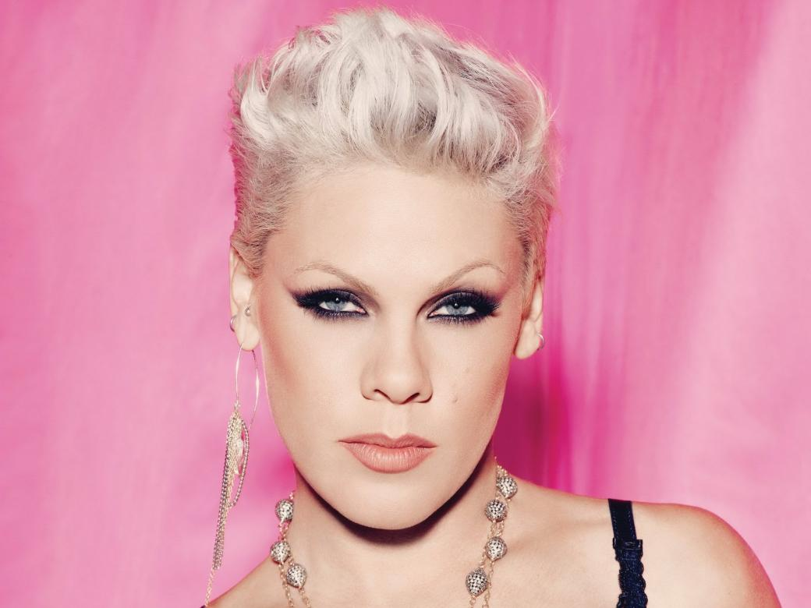

P!nk
About P!NK
Alecia Beth Moore, known professionally as Pink, is an American singer and songwriter. She was originally a member of the girl group Choice. In 1995, LaFace Records saw potential in Pink and offered her a solo recording contract.
Discography
| 2000 | Can't Take Me Home |
| 2001 | Missundaztood |
| 2003 | Try This |
| 2006 | I'm Not Dead |
| 2008 | Funhouse |
| 2012 | The Truth About Love |
| 2017 | Beautiful Trauma |
| 2019 | Hurts 2B Human |